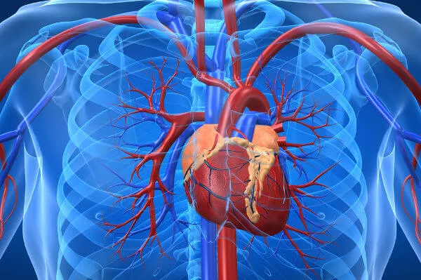
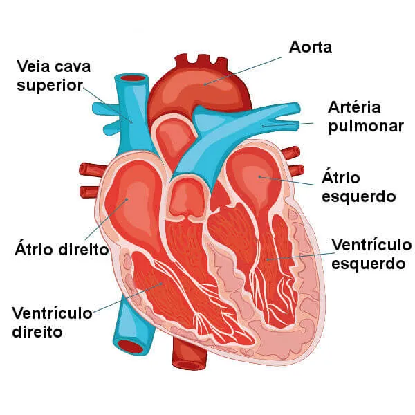

Sistema Cardiovascular
O sistema cardiovascular, também conhecido como sistema circulatório,
é responsável pelo transporte de sangue, oxigênio, nutrientes e outros
elementos essenciais para as células do corpo, além de remover resíduos
metabólicos.
É um sistema fechado composto por vários órgãos e estruturas,
que trabalham juntos para manter a homeostase e a saúde geral do organismo.

O sistema cardiovascular diz respeito ao sistema formado pelo coração e vasos sanguíneos.
Crédito da Imagem: shutterstock
O sistema cardiovascular, também chamado de sistema circulatório, é o sistema responsável por garantir o transporte de sangue pelo corpo, permitindo, dessa forma, que nossas células recebam, por exemplo , nutrientes e oxigênio. Esse sistema é formado pelo coração e pelos vasos sanguíneos.
Tópicos deste artigo
1 - Coração
2 - Partes do Coração
3 - Sistema Cardiovascular
4 - Componentes do Sistema Cardiovascular
5 - Funções do Sistema Cardiovascular
Componentes de Sistema de Cardiovascular
O sistema cardiovascular é composto pelas seguintes estruturas
→ Coração
